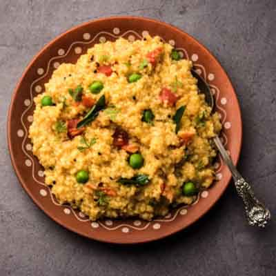
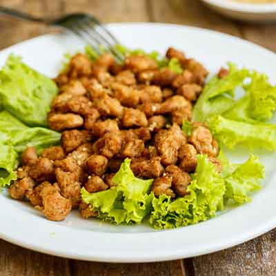
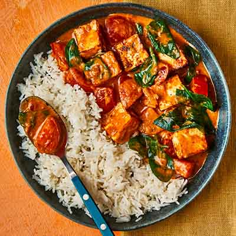

|
 Vegetable Khichuri The term Khichdi comes from the Sanskrit word 'Khiccha', meaning a dish of rice and legumes. Largely, Khichdi is made from rice and lentils, but there are some other regional variations like Bajra Khichdi and Moong Khichdi. In Hindu culture, it is one of the first solid foods that babies eat. |
 Soy food Curry In the mechanical process, the soybeans are cracked, dried, heated (steamed) and fed to a mechanical press (screw press), then the resulting flakes are dried and ground. The heat generated by the friction of the screw press destroys the anti-nutritional factors in raw soybeans. |
 Paneer Curry Paneer Tikka Masala is a popular Indian curry where cubes of paneer (Indian cottage cheese), onions and peppers are marinated with yogurt and spices, grilled and then tossed in a creamy tomato based curry. This dish goes extremely well with butter naan or paratha or basmati rice. |